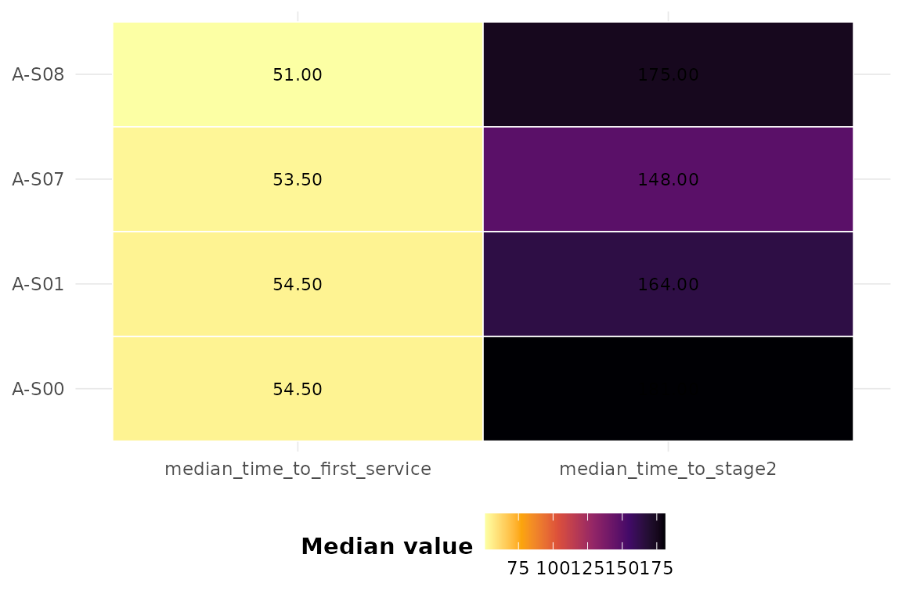

Many simulations move entities through sequential processing stages (Stage 1 -> Stage 2 -> Stage 3 -> Stage 4). This vignette shows how to quantify throughput and identify bottlenecks.
library(dynasimR)
sim <- load_example_data()Stage throughput
st <- stage_throughput(sim)
st
#> # A tibble: 4 × 7
#> scenario stage n median_time q25 q75 completed_frac
#> <chr> <chr> <int> <dbl> <dbl> <dbl> <dbl>
#> 1 A-S00 Stage2 4000 153 77 258 NA
#> 2 A-S01 Stage2 4000 145 74 253 NA
#> 3 A-S07 Stage2 4000 151 80 259 NA
#> 4 A-S08 Stage2 4000 151 77 259. NAOnly Stage2 (time_to_stage2) is present in the shipped
example, but the machinery generalises to Stage1..Stage4 when the
columns exist in your simulation output.
Bottleneck detection
detect_bottlenecks(st, threshold = 0.75)
#> # A tibble: 1 × 8
#> scenario stage n median_time q25 q75 completed_frac is_bottleneck
#> <chr> <chr> <int> <dbl> <dbl> <dbl> <dbl> <lgl>
#> 1 A-S00 Stage2 4000 153 77 258 NA TRUEVisualising first-service times
plot_scenario_heatmap(
sim,
metrics = c("median_time_to_first_service",
"median_time_to_stage2")
)